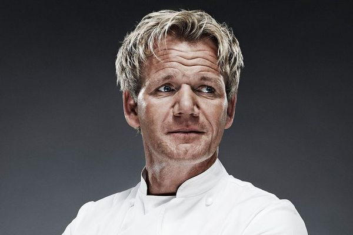
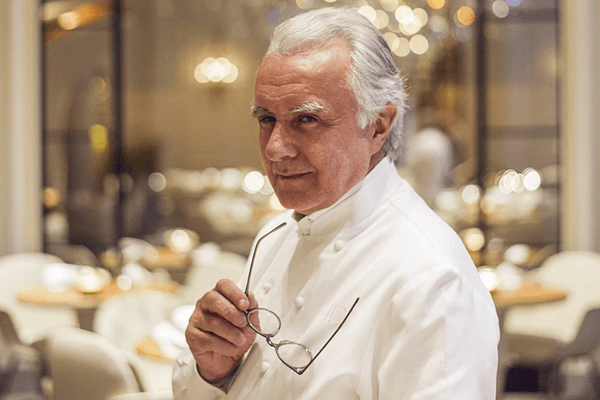
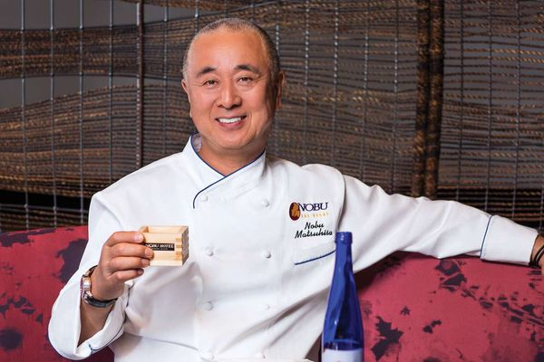
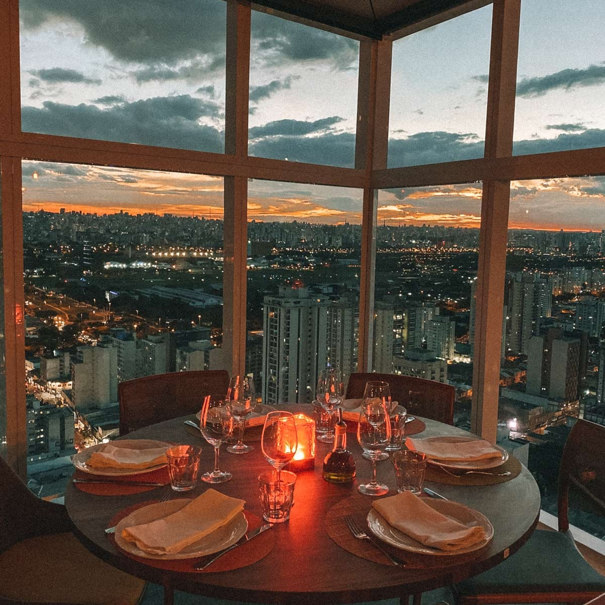

Gordon Ramsey
R$ XXX, XX

Alan Ducasse
R$ XXX, XX

Nobu Matsuhisa
R$ XXX, XX

Temos mais de 20 anos de história
Chef Stars é um restaurante icônico situado em uma cidade cosmopolita, conhecido por celebrar a diversidade culinária. Fundado por um chef visionário, o estabelecimento tornou-se famoso por receber chefs renomados de todo o mundo para colaborações especiais mensais. Essas residências temporárias transformam o restaurante em um epicentro da culinária internacional, proporcionando aos clientes experiências gastronômicas únicas e promovendo um intercâmbio cultural entre chefs e comensais. Ao longo dos anos, o Chef Stars se tornou um símbolo da união entre diferentes culturas através da comida, destacando a paixão pela gastronomia e sua capacidade de unir pessoas de todo o mundo em torno de uma mesa.